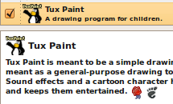
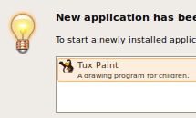
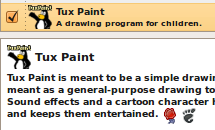
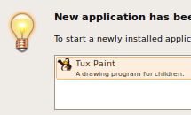

There is already a ton of software ready right after installating Ubuntu, but we understand that you will want to download additional applications to add functionality. That's why we have thousands of up-to-date, carefully polished, free software packages in our repositories ready for you to use.
Using the Add/Remove application, you can search for a particular piece of software or browse through the carefully filtered software categories. In a click, your new applications are ready to be used.
 


